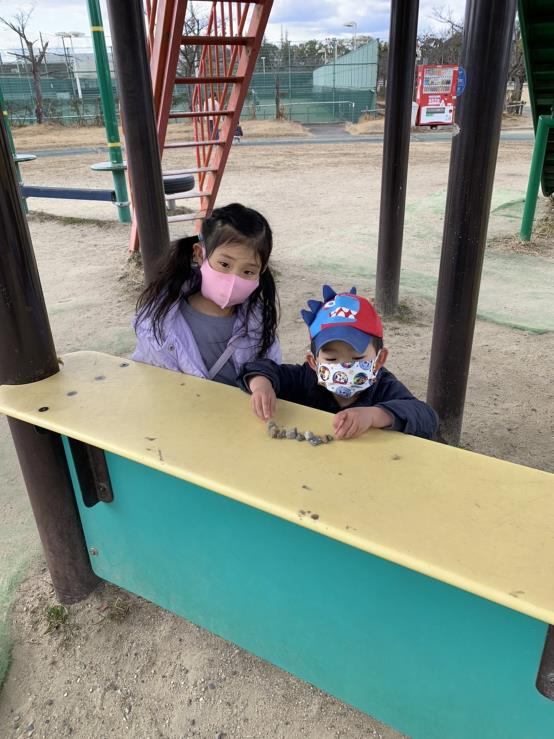
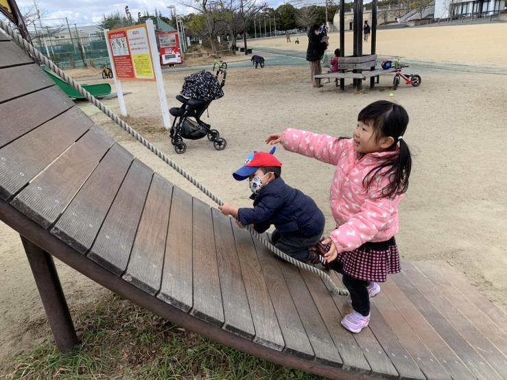

橋爪家と遊んでもらった
2022年2月6日
八幡市民スポーツ公園
 2日前に、暢茂が38度の熱を出してしまい。寒気、吐き気、倦怠感で、半日ぐらい寝たきり。育児もなにもできなくて申し訳なかった。
前日に、検査したところ、コロナ陰性。良かった。
当日には、体調も回復。橋爪さんのお誘いに、参加できてよかった。
欽明公園が工事中。10時集合のはずが、遅れてしまい。橋爪さんに申し訳なかった。そこで、八幡市民スポーツ公園に移動。
第二京阪 八幡東ICのある交差点を東に右折。自宅からは約15分。
遊具が大きい。砂場もある。広場もある。そして無料。こんないいところがあるなんて知らなかった。八幡市民なのに。。橋爪さんありがとう。
さとみちゃんは、ピアノの発表会だね。がんばって。きっと上手くいくよ。